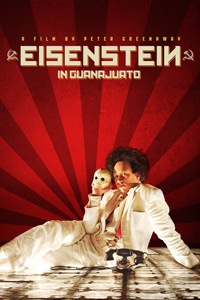
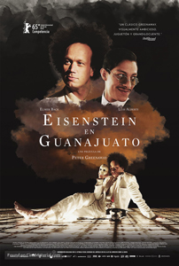
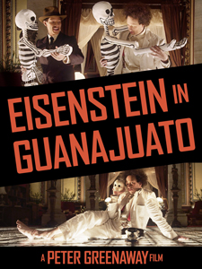

2015

Venerated Soviet filmmaker Sergei Eisenstein (Elmer Bäck) travels to Mexico to shoot his new film after being shunned by Hollywood. There he has a sensual experience that becomes a significant turning point in his life and career.
Eisenstein in Guanajuato premiered at the 65th Berlin International Film Festival in the main competition section on 11 February 2015. The film was voted to the bottom place by the Screen International's critics’ jury and subsequently ignored by the official jury.
Sergei Eisenstein
Palomino Cañedo
Frida Kahlo
Mercedes
Gideon
Rolando
Pascal
Pera
Alba
Mary Craig Sinclair
Hunter S. Kimbrough
Bodyguard 1


As stated by Greenaway himself: "The venerated filmmaker Eisenstein is comparable in talent, insight and wisdom, with the likes of Shakespeare or Beethoven; there are few - if any - directors who can be elevated to such heights. On the back of his revolutionary film Battleship Potemkin, he was celebrated around the world, and invited to the US. Ultimately rejected by Hollywood and maliciously maligned by conservative Americans, Eisenstein traveled to Mexico in 1931 to consider a film privately funded by American pro-Communist sympathizers, headed by the American writer Upton Sinclair. Eisenstein's sensual Mexican experience appears to have been pivotal in his life and film career - a significant hinge between the early successes of Strike, Battleship Potemkin and October, which made him a world-renowned figure, and his hesitant later career with Alexander Nevsky, Ivan the Terrible and The Boyar's Plot.
